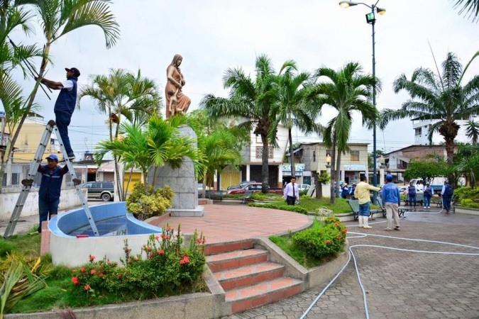
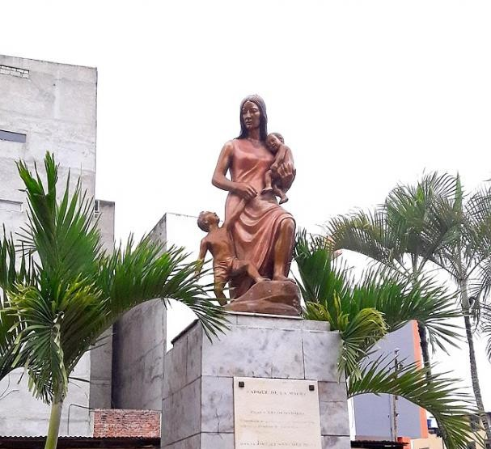

El parque se encuentra en la ciudad de Machala y su nombre se debe en homenaje a la madre símbolo de dedicación, esfuezo, pilar del hogar. Esté parque es un sitio pequeño pero especial, porque contiene espacios verdes donde se encuentra la estatua de una mujer con sus hijos, es decir un monumento de la madre.
Se encuentra ubicado frente a la Capilla de la Virgen de Chilla. en la Avenida Gonzalo Córdova y Rocafuerte, Consta de un área de 2600 metros cuadrados mas 450 metros de una calle regenerada.